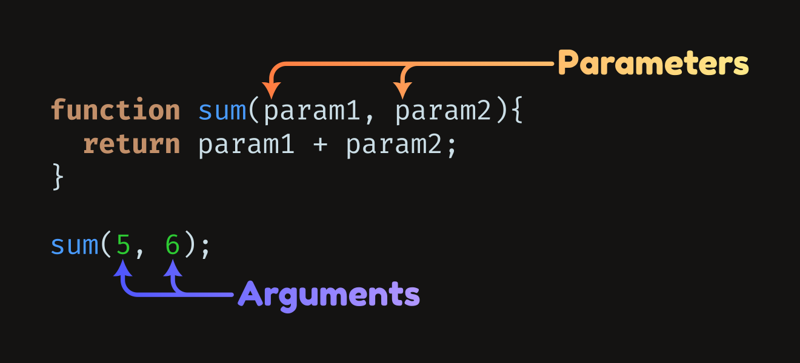

0.2. Pipeline Usage#
The bare-minimum to use this pipeline involves calling four functions which have sensible default values for LBM recordings.
The only required inputs to the pipeline are a path where your raw/previously processed data lives.
This common interface is described here with the goal of avoiding redundancy through the rest of the documentation.
Core Parameters#
For the Core functions in this pipeline, the initial parameters are always the same.
Parameters and Arguments
The term “parameter” and “argument” used throughout this guide refer to the inputs to each function, what goes inside the paranthesis (). Running “help convertScanImageTiffToVolume” in the command window will show to you and describe the parameters of that function.
{kind=link}
Required#
The only required parameter is the data-path:
data_path
: A filepath leading to the directory that contains the input files.
This can be given as an argument without specifying the ‘name’:
convertScanImageTiffToVolume("C:/Users/MBO/MATLAB/data/");
Optional#
The remaining parameters are optional:
save_path
: A filepath leading to the directory where any results are saved.
ds
: Dataset name/group path, a character or string (’’ or “”) array beginning with a foreward slash ‘’. For example, ‘/Y’, “/mov”, ‘/raw’.
debug_flag
: This is how you can skip a step in the pipeline. Set to 1 to print all files / datasets that would be processed, then stop before any processing occurs.
overwrite
: Set to 1 to overwrite or delete pre-existing data. Setting to 0 will simply return without processing that file.
num_cores
: Set to the number of CPU cores to use for parallel computing.
Though num_cores is an option in pre-processing, there are no parallel computations during this step so the value will be ignored.
Optional parameters must be given a name for the function to parse:
data_path = "C:/Users/MBO/MATLAB/data/";
save_path = fullfile(data_path, "results"); % data_path/results
convertScanImageTiffToVolume( ...
data_path, ... % required, parameter alone
'save_path', save_path, ... % optional, include the name
'ds','/Y', ...
'debug_flag', 1, ...
'trim_pixels', [0 0 0 0], ...
'overwrite', 1, ...
'fix_scan_phase', 0 ...
);
See the included script demo_LBM_pipeline at the root of this repository for a working example.
Logging#
To File#
A log file will be saved with every processing step.
This logs the start time and duration of each computation, as well as storing metadata and function parameters.
The pipeline step is prepended to the function name, followed by the data and time of the run.
{kind=link}
To Command Window#
Additionally, you will see metadata printed to the command window when a processing step is started:
Log file created: save_path\2024_08_02_11_21_05_segmentation.log
Beginning registration with 23 cores...
Beginning plane: 13
metadata contents:
num_planes = 28
num_rois = 2
num_frames = 3000
frame_rate = 10.5903059418262
fov = [1360;2200]
pixel_resolution = 3.0205893832943
sample_format = int16
num_pixel_xy = [224;732]
roi_width_px = 224
roi_height_px = 732
tiff_length = 1480
tiff_width = 224
raw_filename = mk717_3umpx_10p59hz_224pxby732px_2mroi_350mw_50to550umdeep_00001
raw_filepath = D:\DATA\2024-07-31_GCaMP8s_mk717\mk717_3umpx_10p59hz_224pxby732px_2mroi_350mw_50to550umdeep_00001
raw_fullfile = D:\DATA\2024-07-31_GCaMP8s_mk717\mk717_3umpx_10p59hz_224pxby732px_2mroi_350mw_50to550umdeep_00001\mk717_3umpx_10p59hz_224pxby732px_2mroi_350mw_50to550umdeep_00001.tif
num_lines_between_scanfields = 16
center_xy = [-3.779761905;0]
line_period = 6.31189695116301e-05
scan_frame_period = 0.0944259783893986
size_xy = [7.792803117;25.21201008]
objective_resolution = 87.26
trim_pixels = [0;0;0;0]
multifile = 0
num_files = 1
dataset_name = /Y